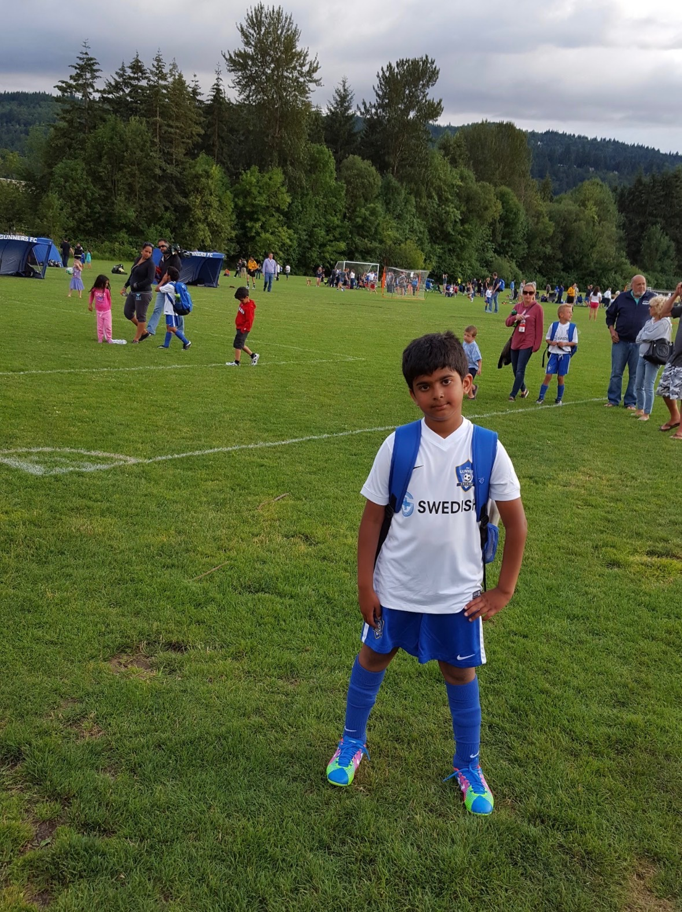
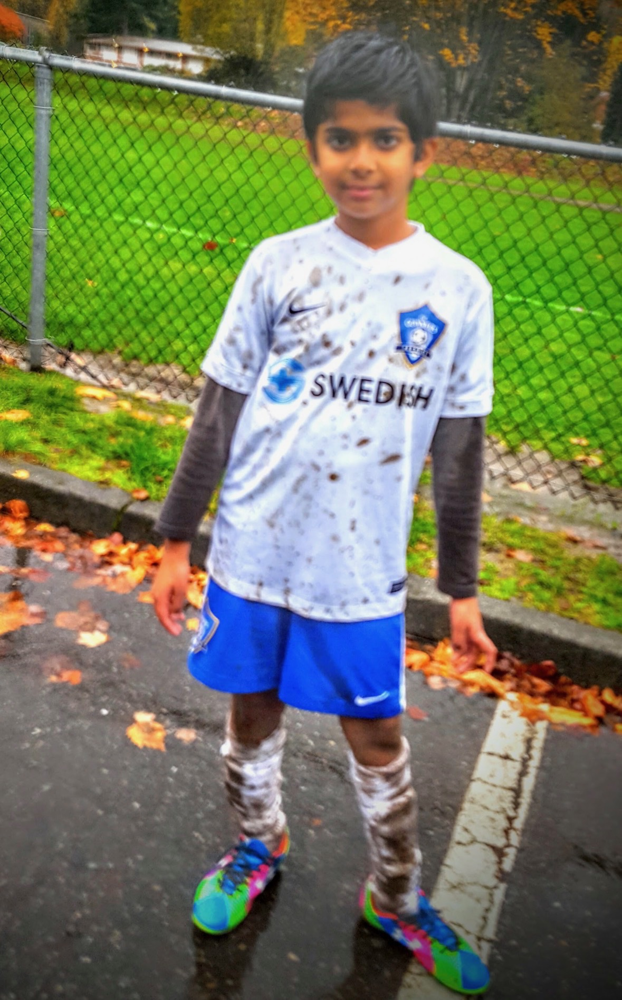

The story
As a young child, I lived in Issaquah with my parents. My younger brother joined our family in 2012, and my grandparents stayed with us for part of each year.
When I was about four, I played soccer at Central Park. I noticed that the artificial turf felt different from real grass. I wanted to know what it was made of, so I put some pieces in my pocket to look at later. Looking at them at home helped me understand why turf could be useful for soccer: I could play without getting muddy the way I would on wet grass.
I also remember going to Costco with my parents and trying the free food samples. Tasting the samples was another way I explored with my senses, just like touching the turf. These trips were also a fun part of spending time with my family.


Connections to the textbook
1. Learning through play
Play gives children chances to practice movement, explore, and learn with others.
Soccer gave me a chance to practice moving and playing while also noticing things around me. Finding the turf interesting shows how a game could turn into a chance to explore. (Riser et al., 2024, Section 5.5)
2. Autobiographical memory
Autobiographical memory is memory for events from your own life. This ability develops during early childhood.
My memory of collecting turf is a small scene from my own childhood. It helps me connect my younger self to the person I am now. (Riser et al., 2024, Section 5.3)
3. Family influence
Family is one of the main settings where children learn how people communicate, cooperate, and behave.
Time with my parents and grandparents, temple visits, and everyday trips were all part of my early learning environment. These repeated activities connected me to my family and its traditions. They remind me that learning happened through relationships and routines, as well as through exploring things on my own. (Riser et al., 2024, Section 6.3)
Family, culture, and surroundings
Having my grandparents around let me spend time with different generations of my family. Temple visits made our traditions part of everyday life. Every Diwali, my family lights firecrackers together.
The places around me mattered too. Having access to a park gave me room to play and explore. In another setting, I might have found different things to be curious about.
Looking back
At the time, I was just playing and having fun. Now I see that these experiences also gave me chances to notice differences, ask questions, and build relationships. Learning was happening during ordinary parts of my day.